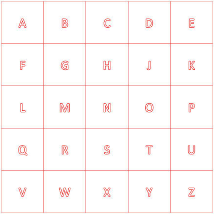
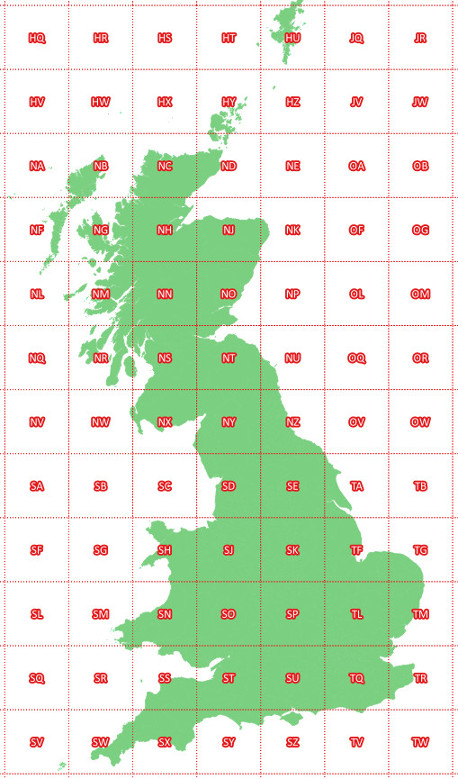
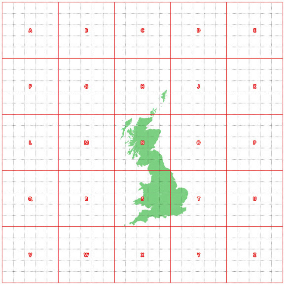

Ordinance Survey Grid Letters
Overview
The current British National Grid (EPSG code 27700) covers the whole of the UK and Ireland. The grid works fine as a purely numerical system - but quite often you'll see coordinates listed with a 2-letter prefix. These represent the first 100 kilometres of the coordinate. The wikipedia page has quite a good section but I thought I'd do a quick run through the workings of the grid letters from my own angle.
The squares are based on a 5 by 5 grid with a letter of the alphabet for each square, excluding 'I' (presumably due to its similarity to '1', 'L' and 'J'). These start with 'A' in the top left and work left-to-right then top-to-bottom.

There's two levels to this grid in it's normal use, one inside the other. The first level goes to 500000 kilometres, then the second to the 100000 within that. This has the net effect of replacing the first digit of both the X and Y coordinate with a letter.

Due to the size of the grid it does technically extetend beyond the useful bounds of the UK. One neat feature of this grid is that the majority of the north of the UK starts with an 'N' grid sheet, while the south starts with an 'S' - I suspect someone had fun coming up with that, but it is easy to remember.

Though I'd question why you'd want to use a system based on British National Grid that far out.
Bringing sheets into GIS
This style of reference are a little less convenient in a modern GIS. Every GIS I've seen is entirely country-agnostic and hasn't got direct support for systems that aren't purely numerical out of the box. It's not too difficult to pre-generate the sheets - I've got my own implimentation in SpatiaLite here. It would probably be quite easy to use these to convert coordinates to grid references with a trigger / function at the database layer.
One potential problem using these regularly is that these letters will require storing the coordinate as a text data type rather than pair of numbers.
A few other notes
These references bleed into many small parts of mapping in the UK. For example, the standard way of labelling manholes starts with with the grid sheet.
It is actually quite useful to have a non-numeric way to reference a coordinate. Finding a number starting with 'SK', you immediately can identify it as a coordinate, somewhere in the Midlands.
As far as I can tell, the system was designed for pre-digital mapping rather than GIS - where there's more of a need to divide the world into physical sheets.